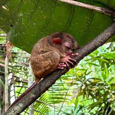

Группа млекопитающих из отряда приматов. В биологической систематике название «обезьяны» может применяться по отношению ко всем представителям инфраотряда Simiiformes или подотряда Haplorhini (оба таксона включают человека, который в обиходном смысле слова обезьяной не является; второй таксон, помимо представителей Simiiformes, включает также долгопятов). Карл Линней включил в состав рода Simia[англ.] всех приматов, кроме лемуров, которых он объединил с шерстокрылами в род Lemur, а также людей, орангутанов и шимпанзе, которых он включил в состав рода Homo. Во многих устаревших классификациях подотряд обезьян (Simiae, также Anthropoidea или Pitheci) противопоставляется подотряду полуобезьян (Prosimii). В целом обезьяны считаются более развитыми в эволюционном отношении. Среди обезьян преобладают виды, рождающие одного детёныша. Обезьяны обитают в тропических и субтропических регионах Америки, Африки (за исключением Мадагаскара), в Гибралтаре, а также в Южной и Юго-Восточной Азии вплоть до Японии. Человек населяет все континенты за исключением Антарктиды (где не живёт постоянно, но постоянно присутствует). У большинства обезьян белки глаз обычно чёрные, как и зрачки (у людей — белые, что контрастирует со зрачками). Обезьяны отличаются от полуобезьян дневным образом жизни, сложным поведением, всеядностью с уклоном в растительноядность. С этим связаны их многие морфологические особенности, например, сложно устроенный мозг. После исключения долгопятов из полуобезьян и выделения в отдельный инфраотряд Tarsiiformes их вместе с инфраотрядом Simiiformes объединили в подотряд Haplorhini или «сухоносые» приматы. У «гаплориновых» приматов сухой нос и менее развитое чувство обоняния[4]. Как и у обезьянообразных, у долгопятообразных есть мутация в гене L-гулонолактоноксидазы (GULO), которая обуславливает потребность в витамине С в рационе. Поскольку стрепсириновые (мокроносые) приматы не имеют этой мутации и сохранили способность вырабатывать витамин С, эта мутация сближает долгопятообразных с другими сухоносыми.
Мака́ки (лат. Macaca) — род приматов из семейства мартышковых, состоящий из 21 вида, большинство из которых обитают в Азии. Появились примерно 5,1 млн лет назад. Макаки — приматы средней величины с крепким туловищем и сильными конечностями. Их густая шерсть окрашена в серо-коричневый цвет, однако порою бывает и чёрной. На продолговатой морде волосяной покров отсутствует. У некоторых видов на голове имеются заметные «шапки» либо своеобразные бороды. Важным отличительным признаком является длина хвоста: у маготов он полностью отсутствует, у некоторых видов он куцый, а у остальных почти такой же длинный, как всё туловище. Длина тела у макак достигает 80 см, а масса колеблется от 6 до 15 кг. Самцы в среднем в два раза тяжелее самок.
Ареал макак простирается от Афганистана до Юго-Восточной Азии, а также до Японии. Особенным разнообразием видов отличается остров Сулавеси, где проживают шесть эндемичных видов макак. Единственным представителем семейства, встречающимся за пределами Азии, является магот, живущий в Северной Африке и в Гибралтаре. Макаки встречаются в разнообразных местообитаниях — от тропических лесов до горных местностей. Японский макак обитает в заснеженных горах Японии и за исключением человека является наиболее северным приматом. Некоторые виды, например макаки-резусы, в большом количестве живут даже в городах. Коренной зуб макаки из раннего плиоцена формации Ред-Крэг (Красная скала)[англ.] (Великобритания), найденный в Уолдрингфилде[англ.] около 1908 года и оставшийся неопознанным в коллекции Музея Седжвика[англ.] в Кембриджском университете, представляет собой одну из старейших и самых северных (52°N) находок обезьяньего зуба в Европе, о которых сообщалось на сегодняшний день.
Как большинство мартышковых, макаки всеядны, но предпочитают растительную пищу, в которую входят фрукты, листья, семена, лепестки, а также кора и хвоя. Из животной пищи они изредка употребляют насекомых, птичьи яйца, мелких позвоночных. Макак-крабоед любит дополнять своё меню крабами.
Саковые (лат. Pitheciidae) — семейство приматов Нового Света. Эти маленькие либо средней величины приматы живут преимущественно на севере и в центральной части Южной Америки. К семейству относятся 43 ныне живущих вида, а также вымершая несколько тысяч лет назад группа антильских обезьян (Xenotrichini). Величина представителей семейства саковых колеблется от 23 до 57 см. Хвост короток у рода какажао (меньше чем половина роста), у других представителей он по длине приблизительно соответствует длине тела. Масса составляет от 0,5 до 3,5 кг, причём у прыгунов (Callicebus) с максимумом 1,5 кг она значительно меньше, чем у представителей других родов. Шерсть плотная, иногда даже лохматая, а её окраска варьирует в зависимости от вида от чёрного и серо-коричневого цвета до белого. Части лица могут быть безволосые. Хвост, который используется не для хватания, а для баланса, полностью покрыт волосами. Зубная формула I2-C1-P3-M3, в целом саковые имеют 36 зубов. У представителей подсемейства Pitheciinae челюсть выдаётся вперёд, будучи приспособленной к жёсткому питанию: резцы большие и выпяченные, клыки массивные. Коренные зубы, наоборот, маленькие. Саковые обезьяны активны в дневное время и обитают на деревьях. Они умеют хорошо лазать и проводят большую часть жизни в кронах. Они передвигаются на всех четырёх ногах и, в зависимости от вида, в том числе с помощью прыжков. Они живут в совместных группах, состав и величина которых может варьировать. Прыгуны и, вероятно, также саки часто образуют моногамные семейные группы, в которых партнёры часто остаются вместе на протяжении всей жизни. Красноспинные саки и какажао живут в больших группах до 50 животных, которые во время поисков пищи часто разделяются на более маленькие подгруппы и к вечернему времени вновь соединяются. Они общаются с помощью ряда звуков, для которых характерны высокие крики или почти птичье щебетание. Для прыгунов характерно утреннее дуэтное пение, которым оба партнёра одновременно отмечают свой ареал.
Саковые обитают только в Южной Америке. При этом наибольшее число видов встречается только в Амазонской низменности от южной Колумбии до Боливии и средней Бразилии. Лишь несколько видов прыгунов населяют леса побережья юго-восточной Бразилии. Жизненным пространством саковых являются леса, причём они могут обитать в совершенно разных типах лесов — от расположенных в глуби континента тропических дождевых лесов до горных и сухих лесов.
Саковые — всеядные животные, которые питаются, однако, преимущественно растительной пищей. У прыгунов основную часть питания составляют плоды, которые дополняются листьями и другими частями растений. Представители подсемейства Pitheciinae питаются предпочтительно твердооболочными плодами и семенами, в незначительной мере употребляя также другие части растений. Насекомые и другие мелкие животные, а также иногда маленькие позвоночные составляют у всех саковых определённую, хоть и незначительную, часть пищи.
Ночные обезьяны (лат. Aotidae) — семейство приматов из парвотряда широконосых обезьян (обезьян Нового Света). Включают один современный род — мирикины, или ночные обезьяны, или дурукули (лат. Aotus). Ночные обезьяны — единственные активные по ночам обезьяны Нового Света и наряду с долгопятами единственные с таким поведением среди всех сухоносых приматов. Они распространены в Центральной и Южной Америке, живут в семейных группах и питаются преимущественно плодами. Количество видов не выяснено полностью, в настоящее время различают 11 видов. Ночные обезьяны — относительно маленькие приматы. Они достигают размеров от 24 до 37 см, вдобавок хвост длиной от 31 до 40 см. Вес варьирует от 0,7 до 1,2 кг. В противоположность многим обезьянам Нового Света полы приблизительно одинаковой величины и не отличаются также в окраске шерсти. Шерсть ночных обезьян мягка и плотна, у обитающих в горах видов более длинная. Она окрашена на спине и на внешней стороне конечностей в оливково-коричневый либо черно-серый цвет, а на животе и на внутренней стороне конечностей — в жёлто-коричневый или оранжево-коричневый цвет. Затылок может быть окрашен в серый или красноватый цвет, это служит для различия двух видовых групп. Хвост длинный и пушистый, его кончик часто чёрный. В отличие от нескольких других обезьян Нового Света, он не может использоваться для хватания. Длинные ноги приспособлены к частично прыгающему передвижению, на четвёртом пальце ноги они имеют когтеобразно сформированный ноготь. Большой палец противопоставлен остальным только частично. Голова круглая, уши маленькие и часто скрыты в шерсти. Носовая перегородка более узкая, чем у других обезьян Нового Света[источник не указан 2878 дней]. Глазницы необычайно большие, глаза большие и коричневые. В отличие от часто активных по ночам мокроносых приматов, глаза ночных обезьян не обнаруживают тапетума. Напротив, её сетчатка снабжена палочками и колбочками. По этой причине ночная активность — не первоначальный, а вторично приобретённый признак этих животных. Так как они имеют только один вид колбочек, их цветное восприятие ограничено. Над и под глазами и иногда также под пастью находятся белые поля. Вдоль лица тянутся три тёмных полосы, одна по лбу — где он может быть расширен треугольным образом — вплоть до носа и, соответственно, по одной с внешней стороны около каждого глаза. Под подбородком они имеют горловой мешок, который служит для усиления издаваемых звуков.
Ночные обезьяны обитают на юге Центральной Америки и в Южной Америке. Их ареал простирается от Панамы на севере через Колумбию — где царит большое, ещё полностью не изученное многообразие видов — через Бразилию и Перу до Боливии, Парагвая и северной Аргентины на юге. Однако они отсутствуют в северо-восточной и восточной части Южной Америки. Жизненным пространством этих животных являются леса, причём они могут встречаться в самых различных типах лесов. Их можно увидеть в тропических дождевых лесах так же как в сухих лесах с опадающей листвой. В горах они встречаются на высотах до 3200 м.
Ночные обезьяны питаются главным образом фруктами, дополняя их другими частями растений и мелкими животными. Они предпочитают маленькие, зрелые плоды и могут посещать также большие фруктовые деревья, так как избегают конкуренции с активными в дневное время более доминантными видами. Удельный вес фруктов в питании у животных в тропических регионах выше, чем у животных в регионах с сезонным климатом. Они поедают — в частности, во время сезона дождей, когда запас фруктов ограничен — также листья, цветки и другие части растений. Охота на мелких животных проходит преимущественно в сумерках. Ночные обезьяны искусно ловят в воздухе летающих насекомых или охотятся на ползающих по веткам. К добыче относятся, к примеру, прямокрылые, моли, жуки и пауки.